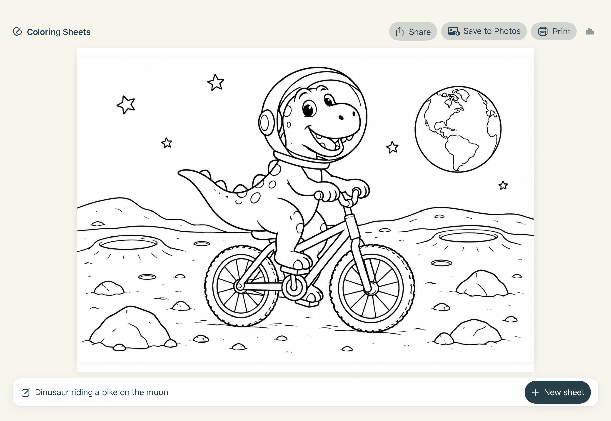

Describe an idea
Type a scene or story idea. Drawing difficulty starts at a useful default and can be changed in Settings.
An iPhone and iPad app by Jordan Erenrich
Turn your ideas into coloring sheets. Describe a scene, pick a favorite, then save, share, or print it from your iPhone or iPad.
For iPhone and iPad running iOS or iPadOS 17 and later. Internet access is required for generation. App Store release is pending review.

From imagination to paper
Type a scene or story idea. Drawing difficulty starts at a useful default and can be changed in Settings.
WonderLines creates one to three compositions. Swipe through the gallery and choose one.
Save a PNG, share it, or open the native print sheet for a page to color.
About Wonder Lines
Wonder Lines was created by Jordan Erenrich for creative coloring activities, classrooms, and time together. Describe a scene, choose the drawing difficulty, and generate a page with room to color.
Generation is free for users, subject to service availability and daily limits. The app connects to the hosted generation service automatically; no sign-in, API key, or server setup is needed.
Developer source on GitHubHelp and safety
For help with Wonder Lines, email jordan.erenrich@gmail.com. Include your app version, device, and what happened. Please do not send access tokens, passwords, or children's personal information.
Use Report sheet in the sheet actions to report an inappropriate result. Settings includes the privacy policy, a choice to withdraw AI consent, and Delete account and data. If deletion is interrupted, reconnect and use Retry.
See the privacy policy for information about AI providers, stored data, and deletion.